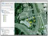

|  |
I contributed to a case study chapter Litter Retriever with a GPS Receiver in the Earth Exploration Toolbook, a collection in the National Science Digital Library and the Digital Library for Earth System Education. This involved the use of GPS technology and Google Earth for the mapping part. |
|
I wrote another case study chapter (Shrinking Forest - Growing Problem) in the Earth Exploration Toolbox on deforestation in the Amazon rainforest in Brazil. The challenge was to come up with some simple image analysis that works with open source tools. |
|
GIS and GPS for Alaskan school teachers, is a pre-service and in-service teachers training course that is funded by the Alaska Space Grant Program.
For this course I developed and delivered lectures on GPS measurements, and ran the hands-on training on field data capture with GPS. |
|
As a follow up of the GIS and GPS for Alaskan school teachers I helped two participating teachers to implement GPS/GIS exercises at their own schools with their students. Working with Steve Paskvan (math teacher at the West Valley High School in Fairbanks, Alaska) and Tim Buckley (science teacher at Barrow High School in Barrow, Alaska) was a new, fascinating and rewarding experience. |